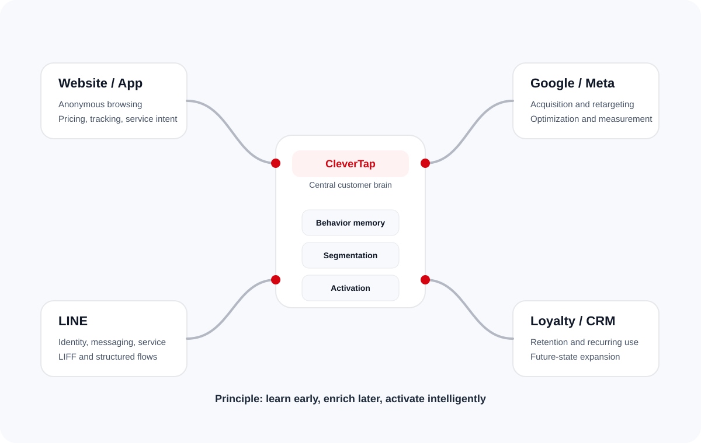

Why this matters for DHL now
DHL does not need more disconnected signals. It needs a way to interpret early intent, preserve context, and convert that context into paid media efficiency, better service journeys and stronger long-term retention. CleverTap is most valuable when positioned as the central operating brain, not just a campaign tool.
Many visitors browse rates, track shipments or check support options without logging in or submitting details.
Google and Meta each optimize within their own ecosystems, but business context remains incomplete.
It is already a major customer touchpoint, yet it is often treated as a support inbox rather than a structured intelligence channel.
The most important moment is not first visit. It is the moment DHL can finally connect the earlier journey to a known profile.
From channel execution to customer decisioning
CleverTap should sit at the center of the stack. Google and Meta remain acquisition and optimization engines. LINE becomes a high-value engagement and identity surface. CleverTap becomes the system that interprets behavior, stores commercial context and triggers the right outbound action when the user is ready.

What DHL gains
- Earlier visibility into intent before identity is known
- Cleaner handoff between acquisition, service and lifecycle marketing
- A practical route from current-state channels to future loyalty programs
What CleverTap is not replacing
- Google remains Google for acquisition scale and modeling
- Meta remains Meta for paid social reach and optimization
- LINE remains LINE for customer engagement and messaging
What CleverTap changes
- It gives DHL a single customer logic layer across all of the above
- It makes anonymous behavior commercially usable
- It creates a profile model that can keep getting richer over time
Business interpretation
The first objective is not to identify every user. It is to identify meaningful intent. Pricing-page depth, repeat visits, tracking-page use, quote-start behavior and service-page browsing all matter because they signal the type of next action DHL should take once the user is reachable.
Typical events DHL should capture
- Rate checker opened and abandoned
- Shipment tracking page viewed repeatedly
- Pickup scheduling page entered but not completed
- Missed-delivery or service-help content viewed
- Country or service preference inferred from repeated behavior
Business interpretation
When a user finally logs in, submits a lead form, schedules a pickup, or interacts through a structured LINE flow, DHL should be able to recognize not just the identity but also the prior journey. That is the difference between generic marketing and informed engagement.
Why this matters commercially
- Media platforms receive better conversion and audience signals
- DHL can personalize service follow-ups, not just promotions
- Behavior from LINE, web and app can converge into one profile model
- The customer relationship can eventually expand into loyalty and recurring use cases
Traditional CDP posture
- Collect data from many systems
- Move data into downstream destinations
- Focus on identity and routing
CleverTap posture
- Capture customer behavior directly on owned surfaces
- Interpret intent in near real time
- Activate journeys and audience sync from the same operating layer
Why that matters for DHL
- DHL needs action and commercial logic, not just cleaner pipes
- Service interactions can feed lifecycle engagement
- The same platform can later support loyalty-led growth